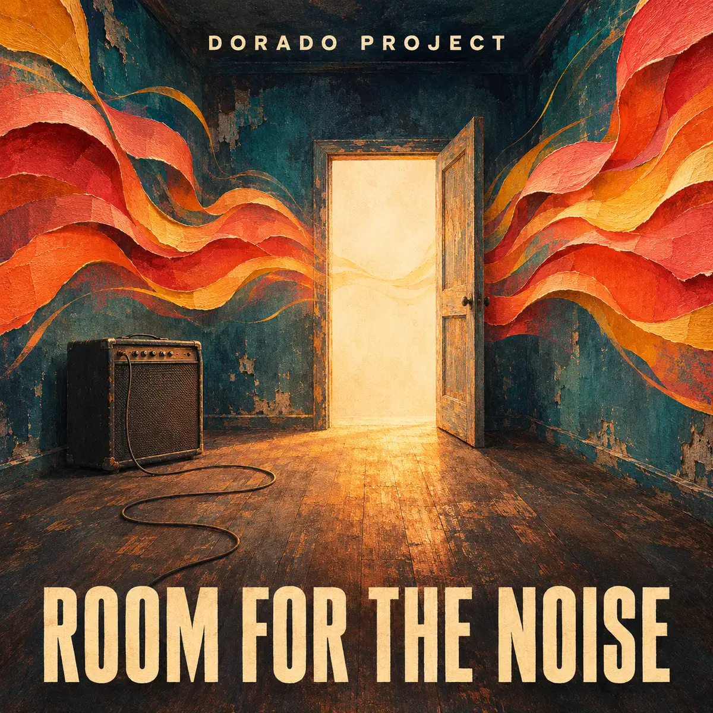

← All releases

SINGLE · SUBMITTED TO DISTROKID
Room for the Noise
Funk rock / Alternative rock
An original English-language funk-rock song about making room for someone exactly as they are: bad days, broken things and all. Written around a syncopated bass groove and an open, melodic chorus.
Spotify link to follow when the track is available.
You do not have to whisper
A third-floor kitchen after two in the morning, a broken chair, rain in someone’s hair. When one person says they take up too much space, the answer is to clear the table and make a place. Room for the Noise turns those small domestic moments into a song about belonging. Its central promise is simple: you do not have to whisper to be welcome. The musical direction pairs a restless bass-led groove with a warm sung chorus, an intimate halftime bridge and an expanded final chorus. Created with AI for lyrics, composition and generated audio under the creative direction of Rutger Kussendrager.
More from Dorado Project
From synthpop to rock: explore more tracks and the story behind Dorado Project.
Explore all tracks →